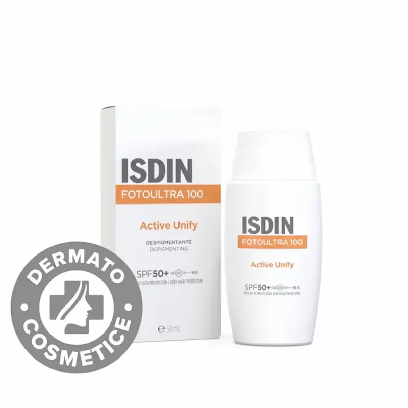
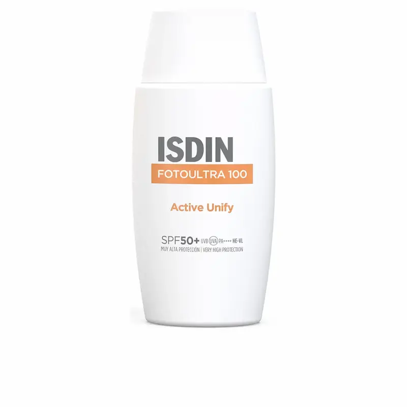

Isdin FotoUltra Active Unify: Triplă acțiune împotriva pigmentării și protecție extremă SPF 100+
Recenzie independentă. Produsul nu este sponsorizat.
Analizăm de ce acest fluid este considerat standardul de aur în corecția melasmei și a semnelor post-acneice: cum complexul exclusiv DP3-Unify, concentrația ridicată de filtre de ultimă generație și alantoina lucrează sinergic pentru a bloca producția de melanină la nivel celular, a ilumina vizibil petele existente și a asigura un ecran solar fără precedent, prevenind recidivele hiperpigmentării chiar și în condițiile verilor toride din România.

Isdin FotoUltra Active Unify
Isdin FotoUltra Active Unify oferă o protecție solară cu acțiune triplă, concepută pentru a combate hiperpigmentarea, petele și melasma. Complexul DP3-Unify reglează producția de melanină, în timp ce textura Fusion Fluid asigură o absorbție rapidă și o protecție ridicată SPF 100+ (PPD 49) împotriva radiațiilor UVA/UVB. Aflați mai multe detalii despre beneficiile produsului pe site-ul oficial Isdin.
De ce merită atenția acest produs?
Isdin FotoUltra Active Unify SPF 50+ este un produs de protecție solară conceput pentru corectarea și prevenirea petelor pigmentare. Formula combină protecție ridicată UVA/UVB cu ingrediente active care ajută la uniformizarea nuanței pielii.
Produsul contribuie la reducerea vizibilă a petelor pigmentare, previne reapariția acestora și susține un ten mai uniform. Textura ușoară se absoarbe rapid, fiind potrivită pentru utilizare zilnică ca parte a rutinei de îngrijire împotriva hiperpigmentării.


Echilibrul ideal între protecția solară extremă și corecția activă a nuanței tenului. Analizăm modul în care formula cu complexul brevetat DP3-Unify blochează sinteza de melanină, iluminând petele existente și prevenind apariția noii pigmentări în condițiile soarelui agresiv din România.
Textura și prima utilizare
Spre deosebire de ecranele solare clasice, dense, cu SPF 100+, care lasă adesea urme albe și un luciu inestetic, Isdin FotoUltra Active Unify beneficiază de textura inovatoare Fusion Fluid. Aceasta se „topește” instantaneu la contactul cu pielea, transformându-se într-un văl protector invizibil.
Produsul oferă o senzație de hidratare fără a îngreuna tenul, ceea ce îl face baza ideală pentru machiaj. Este un produs indispensabil pentru persoanele din România care se confruntă cu melasmă sau pete post-acneice: fluidul nu înfundă porii și permite pielii să arate natural mată, oferind în același timp un nivel maxim de protecție, de două ori mai mare decât standardul SPF 50+.
Analiza compoziției: Ce conține?
Nucleul formulei este complexul brevetat DP3-Unify, care acționează ca un corector de înaltă precizie al melanogenezei. Acesta reglează producția de melanină în trei etape critice, ajutând nu doar la mascarea, ci la iluminarea biologică a melasmei, cloasmei și a lentigo-ului solar.
Secretul eficienței Active Unify constă în sinergia dintre Phenylethyl Resorcinol (un agent puternic de iluminare) și concentrația ridicată de Alantoină, care calmează pielea și accelerează regenerarea. Această combinație, împreună cu filtrele de ultimă generație, transformă fluidul într-un sistem terapeutic complet, ce protejează împotriva razelor UVA de două ori mai puternic decât fotoprotectoarele europene obișnuite.
Corecție vs. Protecție: cum se utilizează corect?
Mulți fac greșeala de a folosi Active Unify doar la plajă. Isdin FotoUltra Active Unify este, în primul rând, un produs de tratament. Pentru un rezultat vizibil (iluminarea petelor cu 25% într-o lună), acesta trebuie aplicat zilnic, chiar dacă vă petreceți ziua la birou sau în mașină, deoarece razele de tip A, care provoacă pigmentarea, penetrează geamurile.
Truc pentru maximizarea efectului: înainte de aplicarea fluidului, folosiți obligatoriu un ser cu Vitamina C. Acest lucru va crea un scut antioxidant dublu: vitamina C neutralizează radicalii liberi „din interior”, iar complexul DP3-Unify blochează declanșatorii externi ai melaninei. Nu uitați de „regula celor două degete” pentru dozarea produsului pe față și gât, pentru a asigura nivelul declarat de SPF 100+.
Cui NU i se potrivește produsul?
În ciuda texturii inovatoare Fusion Fluid, formula Isdin FotoUltra Active Unify este foarte bogată în componente active. Persoanelor cu tenul foarte gras, în plină vară caniculară, finish-ul li se poate părea prea lucios dacă nu este fixat cu o pudră.
Dacă scopul dumneavoastră este doar matifierea, fără a lupta împotriva petelor, este mai bine să alegeți clasicul Isdin Fusion Water. Gama Active Unify a fost creată special ca un produs terapeutic pentru cei care s-au confruntat deja cu melasmă, cloasmă sau pete post-acneice pronunțate și pentru care este critică protecția SPF 100+ pentru prevenirea recidivelor.
De unde puteți cumpăra Isdin FotoUltra Active Unify în România?
Brandul Isdin este prezent în România în segmentul de dermato-cosmetice premium. Veți găsi întotdeauna acest fluid în cele mai mari rețele, precum Farmacia Tei, Dr. Max sau Help Net.
Vă recomandăm să căutați Active Unify în secțiunile de dermato-cosmetică. În România, pentru acest produs există adesea reduceri la achiziționarea unui pachet (fluid + curățare), de aceea vă sfătuim să verificați disponibilitatea și prețul actual Isdin pe site-urile farmaciilor înainte de cumpărare, pentru a obține cel mai bun preț.
Unde poți găsi Isdin FotoUltra Active Unify SPF 50+?
Dacă ești în căutarea unui produs cu protecție solară pentru reducerea petelor pigmentare și uniformizarea tenului, Isdin FotoUltra Active Unify SPF 50+ poate fi găsit în farmacii și magazine online din Romania.
Verifică disponibilitatea și prețul*Linkul este oferit în scop informativ. În cazul unui parteneriat, aici va fi plasat link direct către produs.
Întrebări frecvente despre Active Unify
Va arăta fața albă sau grasă după utilizarea SPF 100+?
Nu, aceasta este unicitatea tehnologiei Fusion Fluid. Spre deosebire de ecranele minerale din generațiile trecute, Active Unify se topește instantaneu pe piele, fără a lăsa o senzație lipicioasă sau efectul de „mască albă”. Finish-ul este unul natural luminos, ceea ce îl face confortabil pentru purtarea zilnică în ritmul urban al Bucureștiului.
Cât de repede voi vedea rezultate în iluminarea petelor?
Primele schimbări vizibile de nuanță apar, de regulă, după 4 săptămâni de utilizare regulată. Datorită complexului DP3-Unify, care blochează melanogeneza, petele existente se luminează treptat, iar tonul general al feței devine mai uniform. Efectul maxim este atins prin combinarea cu seruri ce conțin Vitamina C.
Trebuie să reaplic fluidul la fiecare 2 ore dacă sunt la birou?
Dacă vă aflați într-o încăpere departe de ferestre, aplicarea de dimineață este suficientă. Totuși, dacă spațiul de lucru este inundat de soare sau plănuiți o masă pe terasă, reaplicarea protecției este obligatorie. Razele UVA, care provoacă melasma, sunt active tot anul și penetrează cu ușurință geamurile birourilor.
Poate fi utilizat Active Unify ca bază de machiaj?
Da, fluidul servește ca un primer excelent. Se combină ideal cu fondurile de ten și corectoarele, fără să se strângă pe parcursul zilei. Acest lucru este deosebit de important pentru femeile din România care doresc să ascundă pigmentarea cu ajutorul produselor cosmetice, în timp ce efectuează un tratament intensiv al acesteia.